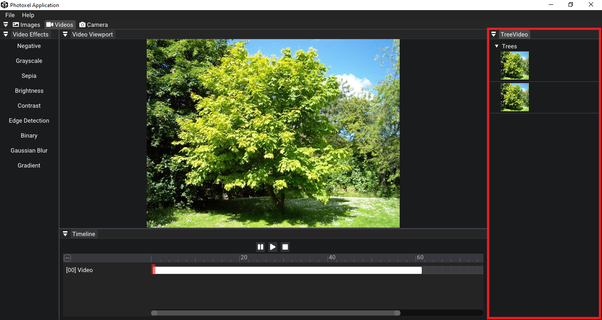

Photoxel
Photoxel
Bienvenido al manual de Photoxel, este documento le ayudará a entender el funcionamiento de la aplicación y estará listo para utilizar todas las características de las que dispone
1. Empezando con Photoxel
Photoxel se divide en 3 grandes categorías que son:
- Imágenes
- Videos
- Cámara
2. Menú
A lo largo de toda la aplicación está presente un menú superior para navegar por las diferentes secciones
Arriba de el hay un menú de opciones que contiene las secciones de File y Help
File
En esta sección podrás buscar en tu navegador de archivos y seleccionar un archivo de imagen o video
También podrás guardar tus resultados en el caso de las imágenes
Help
En esta sección podrás leer el manual en el que se encuentra en este momento

3. Editando imágenes
La sección de imágenes tiene en su contenido las opciones de:
- Viewport
- Effects
- Stats
- Tree

Viewport
Esta es la pantalla principal, aquí se renderiza la imagen que fue seleccionada y se ve en tiempo real los filtros que le son establecidos.
Effects
Aquí se encuentran todos los efectos disponibles que puedes utilizar para aplicar a tus imágenes, estan desplegados en una lista vertical de botones.
Presionando el boton a la imagen seleccionada se le aplicará el respectivo filtro
La lista actual de filtros se conforma en:
- Negativo
- Escala de grises
- Sepia
- Brillo
- Contraste
- Detección de esquinas
- Binario
- Desenfoque gaussiano
- Gradiente
- Mosaico


Stats
Esta sección contiene los metadatos de la imagen e información importante, por ejemplo el nombre de la imagen, su peso, el rendimiento de la aplicación, las proporciones de la imagen etc.
Tree
En esta sección se observan las imágenes cargadas y los filtros que fueron aplicados en ella
4. Editando videos
La sección de videos tiene en su contenido las opciones de:
- Viewport
- Effects
- Timeline
- Tree
Effects
Al igual que con las imagenes, podrá acceder aquí a una lista de botones con todos los filtros que ofrece la aplicación
Viewport
Aquí se podrá ver el video reproducido con o sin filtros
Timeline
Aquí se encuentra una línea del tiempo del video para poder ver su duración y navegar en el
Tree
En esta sección se encuentran los videos y los filtros que han sido aplicados
5. Utilizando la cámara
La sección de cámara tiene en su contenido las opciones de:
- Cameras
- Viewport
- Stats
Cameras
Aquí se pueden elegir una de las cámaras con las que cuente su dispositivo, podrá elegir la que más prefiera, aquí también se podrá encender y apagar la cámara
Viewport
Aquí podrá observar la salida de la cámara, podrá ver rostros detectados enmarcados en un rectangulo rojo

Stats
Contiene información útil de la salida de la cámara, como por ejemplo la cantidad de personas detectadas